The arc-length differential determines an area differential and the area of a region will also be an invariant of hyperbolic geometry. The area of a region will not change as it moves about the hyperbolic plane. We express the area formula in terms of polar coordinates.
Definition5.4.1
Suppose a region \(R\) in \(\mathbb{D}\) is described in polar coordinates. The area of \(R\) in \((\mathbb{D},{\cal H})\text{,}\) denoted \(A(R)\text{,}\) is given by
The integral in this formula is difficult to evaluate directly in all but the simplest cases. Following is one such case.
Example5.4.2The area of a circle in \((\mathbb{D},{\cal H})\)
Suppose our region is given by a circle whose hyperbolic radius is \(a\text{.}\) Since area is an invariant, we may as well assume the circle is centered at the origin. Let \(x\) be the point at which the circle intersects the positive real axis (so \(0 \lt x \lt 1\)), as pictured below. Then, by the distance formula
\begin{equation*}
a = \ln\bigg(\frac{1+x}{1-x}\bigg).
\end{equation*}
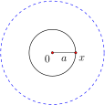
Solving for \(x\text{,}\) we have
\begin{equation*}
x = \frac{e^a - 1}{e^a + 1}.
\end{equation*}
This circular region may be described in polar coordinates by \(0 \leq \theta \leq 2\pi\) and \(0 \leq r \leq x\text{.}\) The area of the region is then given by the following integral, which we compute with the \(u\)-substitution \(u = 1 - r^2\text{:}\)
This last expression can be rewritten using the hyperbolic sine function, evaluated at \(a/2\text{.}\) We investigate the hyperbolic sine and cosine functions in the exercises but note their definitions here.
Definition5.4.3
The hyperbolic sine function, denoted \(\sinh(x)\text{,}\) and the hyperbolic cosine function, denoted \(\cosh(x)\text{,}\) are functions of real numbers defined by
The area derivation in Example 5.4.2 may then be summarized as follows.
Theorem5.4.4
The area of a hyperbolic circle with hyperbolic radius \(r\) is \(4\pi \sinh^2(r/2)\text{.}\)
Other regions are not as simple to describe in polar coordinates. An important area for us will be the area of a \(\frac{2}{3}\)-ideal triangle, the figure that results if two of the three vertices of a hyperbolic triangle are moved to ideal points. See Figure 5.4.6.
Theorem5.4.5
The area of a \(\frac{2}{3}\)-ideal triangle having interior angle \(\alpha\) is equal to \(\pi -
\alpha\text{.}\)
The proof of this theorem is given in the following section. The proof there makes use of a different model for hyperbolic geometry, the so-called upper half-plane model.
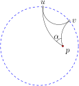Figure5.4.6 A \(\frac{2}{3}\)-ideal triangle having interior angle \(\alpha\) has area equal to \(\pi - \alpha\text{.}\)
An ideal triangle consists of three ideal points and the three hyperbolic lines connecting them. It turns out that all ideal triangles are congruent (a fact proved in the exercises); the set of all ideal triangles is minimally invariant in \((\mathbb{D}, {\cal H})\text{.}\)
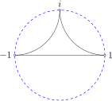Figure5.4.7 All ideal triangles are congruent to this one.
Theorem5.4.8
Any ideal triangle has area equal to \(\pi\text{.}\)
Since all ideal triangles are congruent, assume our triangle \(\Delta\) is the ideal triangle shown in Figure 5.4.7.
But then \(\Delta\) can be partitioned into two \(\frac{2}{3}\)-ideal triangles by drawing the vertical hyperbolic line from 0 along the imaginary axis to ideal point \(i\text{.}\) Each \(\frac{2}{3}\)-ideal triangle has interior angle \(\pi/2\text{,}\) so \(\Delta\) has area \(\pi/2+\pi/2 = \pi\text{.}\)
It is a remarkable fact that \(\pi\) is an upper bound for the area of any triangle in \((\mathbb{D},{\cal H})\text{.}\) No triangle in \((\mathbb{D},{\cal H})\) can have area as large as \(\pi\text{,}\) even though side lengths can be arbitrarily large!
Theorem5.4.9
The area of a hyperbolic triangle in \((\mathbb{D},{\cal H})\) having interior angles \(\alpha,
\beta\text{,}\) and \(\gamma\) is
Consider Figure 5.4.10 containing triangle \(\Delta pqr\text{.}\) We have extended segment \(qp\) to the ideal point \(t\text{,}\) \(u\) is an ideal point of line \(rq\text{,}\) and \(v\) is an ideal point of line \(pr\text{.}\) The area of the ideal triangle \(\Delta tuv\) is \(\pi\text{.}\) Notice that regions \(R_1\text{,}\) \(R_2\text{,}\) and \(R_3\) are all \(\frac{2}{3}\)-ideal triangles contained within the ideal triangle. Consider \(R_1\text{,}\) whose ideal points are \(u\) and \(t\text{,}\) and whose interior angle is \(\angle uqt\text{.}\) Since the line through \(q\) and \(r\) has ideal point \(u\text{,}\) the interior angle of \(R_1\) is \(\angle uqt=\pi-\beta\text{.}\) Similarly, \(R_2\) has interior angle \(\pi - \alpha\) and \(R_3\) has interior angle \(\pi - \gamma\text{.}\)
Let \(R\) denote the triangle region \(\Delta pqr\) whose area \(A(R)\) we want to compute. We then have the following relationships among areas:
In Euclidean geometry trigonometric formulas relate the angles of a triangle to its side lengths. There are hyperbolic trigonometric formulas as well.
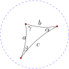Figure5.4.11 Relating angles and lengths in a hyperbolic triangle.
Theorem5.4.12
Suppose a hyperbolic triangle in \(\mathbb{D}\) has angles \(\alpha\text{,}\) \(\beta\) and \(\gamma\) and opposite hyperbolic side lengths \(a\text{,}\) \(b\text{,}\) \(c\text{,}\) as pictured in Figure 5.4.11. Then the following laws hold.
The second hyperbolic law of cosines also leads to an interesting result. In the hyperbolic plane, if we find ourselves at point \(z\text{,}\) we may infer our distance \(c\) to a point \(w\) by estimating a certain angle, called the angle of parallelism of \(z\) to the line \(L\) through \(w\) that is perpendicular to segment \(zw\text{.}\) The following is a picture of this scene:
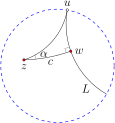
In this setting, \(\Delta zwu\) is a \(\frac{1}{3}\)-ideal triangle, and the second hyperbolic law of cosines applies with \(\gamma = 0\) and \(\beta = \pi/2\) to yield the following result.
Corollary5.4.14
Suppose \(z\) and \(w\) are points in \(\mathbb{D}\text{,}\) and \(L\) is a hyperbolic line through \(w\) that is perpendicular to hyperbolic segment \(zw\text{.}\) Suppose further that \(u\) is an ideal point of \(L\text{.}\) Let \(\alpha = \angle wzu\) and \(c = d_H(z,w)\text{.}\) Then
The angle of parallelism is pursued further in Section 7.4.
Example5.4.15Flying around in \((\mathbb{D},{\cal H})\)
Suppose a two-dimensional ship is plopped down in \(\mathbb{D}\text{.}\) What would the pilot see? How would the ship move? How would the pilot describe the world? Are all points equivalent in this world? Could the pilot figure out whether the universe adheres to hyperbolic geometry as opposed to, say, Euclidean geometry?
Recall what we know about hyperbolic geometry. First of all, any two points in the hyperbolic plane are congruent, so the geometry is homogeneous. The pilot could not distinguish between any two points.
Second, the shortest path between two points is the hyperbolic line between them, so light would travel along these hyperbolic lines, assuming light follows geodesics. The pilot's line of sight would follow along these lines, and the ship would move along these lines to fly as quickly as possible from \(p\) to \(q\text{,}\) assuming no pesky asteroid fields block the path. To observe a galaxy at point \(q\) from the point \(p\) (as in the diagram below), the pilot would point a telescope in the direction of line \(L\text{,}\) the line along which the light from the galaxy travels to reach the telescope.
With a well-defined metric, we can say more. The pilot will view the hyperbolic plane as infinite and without boundary. In theory, the pilot can make an orbit of arbitrary radius about an asteroid located anywhere in the space.
To test for hyperbolic geometry, perhaps the pilot can turn to triangles. The angles of a triangle in the hyperbolic plane sum to less than 180\(^\circ\text{,}\) but only noticeably so for large enough triangles. In our disk model of hyperbolic geometry, we can easily observe this angle deficiency. In the figure below, triangle \(\Delta zuw\) has angle sum about \(130^\circ\text{,}\) and \(\Delta pqr\) has angle sum of about \(22^\circ\text{!}\) Whether an intrepid 2-D explorer could map out such a large triangle depends on how much ground she could cover relative to the size of her universe. We will have more to say about such things in Chapters 7 and 8.
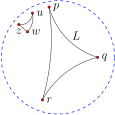
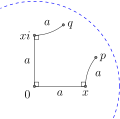Figure5.4.16 A journey that would trace a square in the Euclidean plane does not get you home in \((\mathbb{D},{\cal H})\text{.}\)
Example5.4.17Hyperbolic squares?
Simply put, hyperbolic squares don't exist. In fact, no four-sided figures with four right angles exist, if we assume the sides are hyperbolic segments. If such a figure existed, its angle sum would be 2\(\pi\text{.}\) But such a figure could be divided along a diagonal into two triangles whose total angle sum must then be \(2\pi\) as well. This means that one of the triangles would have angle sum at least \(\pi\text{,}\) which cannot happen.
On the other hand, there is no physical obstruction to a two-dimensional explorer making the following journey in the hyperbolic plane: Starting at a point such as \(p\) in Figure 5.4.16, head along a line in a certain direction for \(a\) units, turn right (\(90^\circ\)) and proceed in a line for \(a\) more units, then turn right again and proceed in a line \(a\) units, and then turn right one more time and proceed in a line for \(a\) units. Let \(q\) denote the point at which the explorer arrives at the end of this journey. In the Euclidean plane, \(q\) will equal \(p\text{,}\) because the journey traces out a square built from line segments. However, this is not the case in \((\mathbb{D},{\cal H})\) (though if we connect \(p\) and \(q\) with a hyperbolic line we obtain a geodesic pentagon with (at least) three right angles!). In the exercises we investigate the distance between \(p\) and \(q\) as a function of the length \(a\text{.}\)
However, we can build a four-sided figure closely resembling a rectangle, if we drop the requirement that the legs be hyperbolic line segments.
Through any point \(0 \lt a \lt 1\) on the positive real axis, we may construct a hyperbolic line \(L_1\) through \(a\) that is perpendicular to the real axis. Also construct a hyperbolic line \(L_2\) through \(-a\) that is perpendicular to the real axis. Now pick a point \(z\) on \(L_1\) and construct the cline arc \(C_1\) through \(z, 1\) and \(-1\text{.}\) Also construct the cline arc \(C_2\) through \(\overline{z}, 1\) and \(-1\text{.}\) This creates a four sided figure, which we call a block. We claim that each angle in the figure is right, and that opposite sides have equal length. Moreover, \(z\) and \(a\) can be chosen so that all four sides have the same length. This figure isn't a rectangle, however, in the sense that not all four sides are hyperbolic segments. The arcs \(C_1\) and \(C_2\) are not hyperbolic lines.
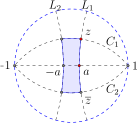Figure5.4.18 Blocks in \(\mathbb{D}\text{:}\) Four-sided, right-angled figures whose opposite sides have equal length.
While squares don't exist in the hyperbolic plane, we may build right-angled regular polygons with more than four sides using hyperbolic line segments. In fact, for each triple of positive real numbers \((a,b,c)\) we may build a right-angled hexagon in the hyperbolic plane with alternate side lengths \(a\text{,}\) \(b\text{,}\) and \(c\text{.}\) We encourage the reader to work carefully through the construction of this hexagon in the proof of Theorem 5.4.19. We use all our hyperbolic constructions to get there.
Theorem5.4.19
For any triple \((a,b,c)\) of positive real numbers there exists a right-angled hexagon in \((\mathbb{D},{\cal H})\) with alternate side lengths \(a, b,\) and \(c\text{.}\) Moreover, all right-angled hexagons with alternate side lengths \(a, b,\) and \(c\) are congruent.
We prove the existence of a right-angled hexagon with vertices \(v_0, v_1,
\cdots, v_5\) such that \(d_H(v_0,v_1) = a, d_H(v_2,v_3) = b\text{,}\) and \(d_H(v_4,v_5) = c\text{.}\)
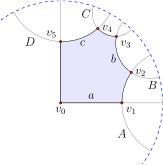Figure5.4.20 Building a right hexagon in the hyperbolic plane that has alternate side lengths \((a,b,c)\text{.}\)
First, let \(v_0\) be the origin in the hyperbolic plane, and place \(v_1\) on the positive real axis so that \(d_H(v_0,v_1)= a\text{.}\) Note that
Next, construct the hyperbolic line \(A\) perpendicular to the real axis at the point \(v_1\text{.}\) This line is part of the cline that has diameter \(v_1v_1^*\text{.}\)
Pick any point \(v_2\) on the line \(A\text{.}\) For the sake of argument, assume that \(v_2\) lies above the real axis, as in Figure 5.4.20.
Next, construct the hyperbolic line \(B\) perpendicular to \(A\) at the point \(v_2\text{.}\) This line is part of the cline through \(v_2\) and \(v_2^*\) with center on the line tangent to \(A\) at \(v_2\text{.}\)
Next, construct the point \(v_3\) on line \(B\) that is a distance \(b\) away from \(v_2\text{.}\) This point is found by intersecting \(B\) with the hyperbolic circle centered at \(v_2\) with radius \(b\text{.}\) (To construct this circle, we first find the scalar \(k\) so that the hyperbolic distance between \(kv_2\) and \(v_2\) is \(b\text{.}\))
Next, draw the perpendicular \(C\) to line \(B\) at \(v_3\text{.}\)
Then construct the common perpendicular of \(C\) and the imaginary axis, call this perpendicular \(D\text{.}\) We construct this common perpendicular as follows. First find the two points \(p\) and \(q\) symmetric to both \(C\) and the imaginary axis. Then find \(p^*\text{,}\) the point symmetric to \(p\) with respect to \(\mathbb{S}^1_\infty\text{.}\) The cline through \(p\text{,}\) \(q\text{,}\) and \(p^*\) is perpendicular to \(C\text{,}\) the imaginary axis and \(\mathbb{S}^1_\infty\text{,}\) so this gives us our line \(D\text{.}\)
If \(C\) and the imaginary axis intersect, no such perpendicular exists (think triangle angles), so drag \(v_2\) toward \(v_1\) until these lines do not intersect. Then construct \(D\) as in the preceeding paragraph. Let \(v_4\) and \(v_5\) be the points of intersection of \(D\) with \(C\) and the imaginary axis, respectively.
This construction gives us a right angled hexagon such that \(d_H(v_0,v_1) = a\) and \(d_H(v_2,v_3) = b\text{.}\) We also want \(d_H(v_4,v_5) =
c\text{.}\) Notice that this last distance is a function of the position of vertex \(v_2\) on line A. As \(v_2\) goes along \(A\) to \(v_1\) there is a point beyond which \(D\) no longer exists, and as \(v_2\) goes along \(A\) to the circle at infinity, the length of segment \(v_4v_5\) takes on all positive real values. So, by the intermediate value theorem, there is some point at which the segment has length \(c\text{.}\) Finally, all right-angled hexagons with alternate side lengths \(a\text{,}\) \(b\text{,}\) and \(c\) are congruent to the one just constructed because angles, hyperbolic lines, and distances are preserved under transformations in \({\cal H}\text{.}\)
Example5.4.21Inscribe a circle in an ideal triangle
We show that if one inscribes a circle in any ideal triangle, its points of tangency form an equilateral triangle with side lengths equal to \(2\ln(\varphi)\) where \(\varphi\) is the golden ratio \((1+\sqrt{5})/2\text{.}\)
Since all ideal triangles are congruent, we choose one that is convenient to work with. Consider the ideal triangle with ideal points -1, 1, and \(i\text{.}\)
The hyperbolic line \(L_1\) joining -1 and \(i\) is part of the circle \(C_1\) with radius 1 centered at \(-1+i\text{.}\) The hyperbolic line \(L_2\) joining \(i\) and 1 is part of the circle \(C_2\) with radius 1 centered at \(1+i\text{.}\) Let \(C\) denote the circle with radius 2 centered at \(-1+2i\text{,}\) as pictured below.
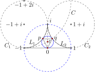
Inversion about \(C\) gives a hyperbolic reflection of \(\mathbb{D}\) that maps \(L_1\) onto the real axis. Indeed, the circle \(C_1\text{,}\) since it passes through the center of \(C\text{,}\) gets mapped to a line - the real axis, in fact. Moreover, hyperbolic reflection across the imaginary axis maps \(L_1\) onto \(L_2\text{.}\) Let \(c\) be the point of intersection of these two hyperbolic lines of reflection, as pictured. The hyperbolic circle with hyperbolic center \(c\) that passes through the origin will be tangent to the real axis, and will thus inscribe the ideal triangle. Let the points of tangency on \(L_1\) and \(L_2\) be \(p\) and \(q\text{,}\) respectively.
The point \(q\) can be found analytically as the point of intersection of circles \(C\) and \(C_2\text{.}\) Working it out, one finds \(q = \frac{1}{5}+\frac{2}{5}i.\) Thus,
Thus, for small \(r\text{,}\) the Euclidean formula for the area of a circle is a good approximation to the true area of a circle in the hyperbolic plane.
Thus, for small \(r\text{,}\) the Euclidean formula for the circumference of a circle is a good approximation to the true circumference of a circle in the hyperbolic plane.
4
Prove that all ideal triangles are congruent in hyperbolic geometry. Hint: Prove any ideal triangle is congruent to the one whose ideal points are 1, \(i\text{,}\) and -1 (see Figure 5.4.7).
5
An intrepid tax collector lives in a country in the hyperbolic plane. For collection purposes, the country is divided into triangular grids. The collector is responsible for collection in a triangle having angles \(12^\circ\text{,}\) \(32^\circ\text{,}\) and \(17^\circ\text{.}\) What is the area of the collector's triangle? Can the entire space \(\mathbb{D}\) be subdivided into a finite number of triangles?
6
Consider the hyperbolic triangle with vertices at 0, \(\frac{1}{2}\text{,}\) and \(\frac{1}{2} + \frac{1}{2}i\text{.}\) Calculate the area of this triangle by determining the angle at each vertex. Hint: To determine the angle at a vertex it may be convenient to move it to the origin via an appropriate transformation in \(\cal H\text{.}\)
7
Recall the block constructed in Example 5.4.17. Prove that all four angles are \(90^\circ\text{,}\) and that for any choice of \(z\text{,}\) opposite sides have equal hyperbolic length.
8
Find a formula for the area of an \(n\)-gon, comprised of \(n\) hyperbolic line segments in terms of its \(n\) interior angles \(\alpha_1, \alpha_2, \cdots, \alpha_n\text{.}\) Hint: Decompose the \(n\)-gon into triangles.
9
Building a hyperbolic octagon with interior angles 45\(^\circ\). Let \(r\) be a real number such that \(0 \lt r \lt 1\text{.}\) The eight points \(v_k
= re^{i\frac{\pi}{4}k}\) for \(k = 0,1,\cdots, 7\) determine a regular octagon in the hyperbolic plane, as shown in Figure 5.4.22. Note that \(v_0\) is the real number \(r\text{.}\) The interior angle of each corner is a function of \(r\text{.}\) We find the value of \(r\) for which the interior angle is \(45^\circ\text{.}\)
a. Prove that the center of the circle containing the hyperbolic line through \(v_0\) and \(v_1\) is
Hint: The center \(z_0\) is on the perpendicular bisector of the Euclidean segment \(v_0
v_0^*\) and also on the perpendicular bisector of the Euclidean segment \(v_0 v_1\text{.}\)
b. Let \(b = \frac{1+r^2}{2r}\) be the midpoint of segment \(v_0
v_0^*\) and show that \(\angle v_0 z_0 b = \pi/8\) precisely when the interior angles of the octagon equal \(\pi/4\text{.}\)
c. Using \(\Delta v_0 b z_0\) and part (b), show that the interior angles of the octagon equal \(\pi/4\) precisely when
d. Solve the equation in (c) for \(r\) to obtain \(r =
(1/2)^{(1/4)}\text{.}\)
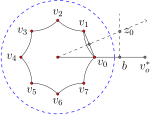Figure5.4.22 Building an octagon with interior angles equal to \(45^\circ\text{.}\)
10
Suppose we construct a regular \(n\)-gon in the hyperbolic plane from the corner points \(r, re^{\frac{1}{n}2\pi i},\) \(re^{\frac{2}{n}2\pi i}\text{,}\) \(\cdots, re^{\frac{n-1}{n}2\pi i}\) where \(0 \lt r \lt 1\text{.}\) Calculate the hyperbolic length of any of its sides.
11
Prove the first hyperbolic law of cosines by completing the following steps.
a. Show that for any positive real numbers \(x\) and \(y\text{,}\)
b. Given two points \(p\) and \(q\) in \(\mathbb{D}\text{,}\) let \(c = d_H(p,q)\text{.}\) Use the hyperbolic distance formula from Theorem 5.3.3 and part (a) to show
c. Now suppose our triangle has one vertex at the origin, and one point on the positive real axis. In particular, suppose \(p = r\) (\(0\lt r\lt 1\)) and \(q = ke^{i\gamma}\) (\(0\lt k\lt 1\)), with angles \(\alpha,
\beta, \gamma\) and hyperbolic side lengths \(a,b,\) and \(c\) as in Figure 5.4.23.
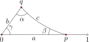Figure5.4.23 A hyperbolic triangle with one corner at the origin and one leg on the positive real axis.
e. Explain why this formula works for any triangle in \(\mathbb{D}\text{.}\)
12
In this exercise we prove the hyperbolic law of sines. We assume our triangle is as in Figure 5.4.24. Thus, \(q = ke^{i\gamma}\) for some \(0 \lt k \lt 1\) and \(p = r\) for some real number \(0 \lt r \lt 1\text{.}\) Suppose further that the circle containing side \(c\) has center \(z_0\) and Euclidean radius \(R\text{,}\) shown in the figure, and that \(m_q\) is the midpoint of segment \(qq^*\) and \(m_p\) is the midpoint of segment \(pp^*\text{,}\) so that \(\Delta z_0m_qq\) and \(\Delta pm_pz_0\) are right triangles.
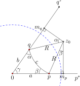Figure5.4.24 Deriving the hyperbolic law of sines.
a. Verify that the triangle angles \(\alpha\) and \(\beta\) correspond to angles \(\angle m_qz_0q\) and \(\angle pz_0m_p\text{,}\) respectively.
b. Notice that \(\sin(\alpha) = |m_q-q|/R\) and \(\sin(\beta) = |m_p-p|/R.\) Verify that \(|m_q-q| = \frac{1/k -
k}{2} = \frac{1 - k^2}{2k}\) and that \(|m_p-p| = \frac{1-r^2}{2r}\text{.}\)
Prove the second law of hyperbolic cosines. Hint: This result follows from repeated applications of the first law and judicial use of the two identities \(\cos^2(x) + \sin^2(x) = 1\) and \(\cosh^2(x) - \sinh^2(x) = 1.\)
14
Recall the journey in Example 5.4.17 in which a bug travels a path that would trace a square in the Euclidean plane. For convenience, we assume the starting point \(p\) is such that the first right turn of \(90^\circ\) occurs at the point \(x\) on the positive real axis and the second turn occurs at the origin. (This means that \(x = (e^a-1)/(e^a+1)\text{.}\)) The third corner must then occur at \(xi\text{.}\) We have reproduced the journey with some more detail in Figure 5.4.25. In this exercise we make use of hyperbolic triangle trig to measure some features of this journey from \(p\) to \(q\) in terms of the length \(a\) of each leg.
a. Determine the hyperbolic distance between \(p\) and the origin (corner two of the journey). In particular, show that \(d_H(0,p) = \cosh^2(a)\text{.}\) Note that if this journey had been done in the Euclidean plane, the corresponding distance would be \(\sqrt{2}a\text{.}\) Is \(\cosh^2(a)\) close to \(\sqrt{2}a\) for small positive values of \(a\text{?}\)
b. Let \(\theta = \angle x0p\text{.}\) Show that \(\tan(\theta) = \frac{1}{\cosh(a)}\text{.}\) What is the corresponding angle if this journey is done in the Euclidean plane? What does \(\theta\) approach as \(a \to 0^+\text{?}\)
c. Show that \(\angle x0p = \angle 0px\text{.}\)
d. Show that \(d_H(p,q) = \cosh^4(a)[1-\sin(2\theta)]+\sin(2\theta)\text{.}\)
e. Let \(\alpha = \angle q p 0\text{,}\) \(b = d_H(0,p)\) and \(c = d_H(p,q)\) Show that
f. Determine the area of the pentagon enclosed by the journey if, after reaching \(q\) we return to \(p\) along the geodesic. In particular, show that the area of this pentagon equals \(\frac{3\pi}{2}-2(\theta+\alpha)\text{.}\) What is the corresponding area if the journey had been done in the Euclidean plane?
g. Would any of these measurements change if we began at a different point in the hyperbolic plane and/or headed off in a different direction initially than the ones in Figure 5.4.25?
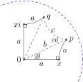Figure5.4.25 A journey that would trace a square in the Euclidean plane does not get you home in \((\mathbb{D},{\cal H})\text{.}\) But how close will the finish point \(q\) be to the starting point \(p\text{?}\)